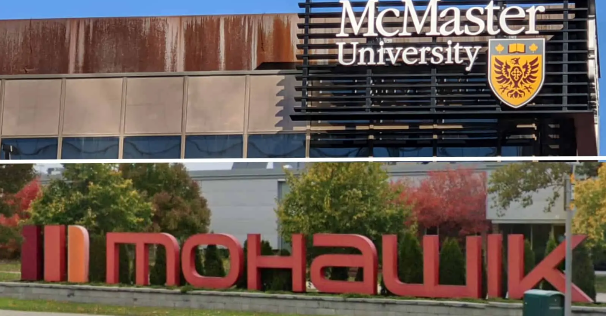
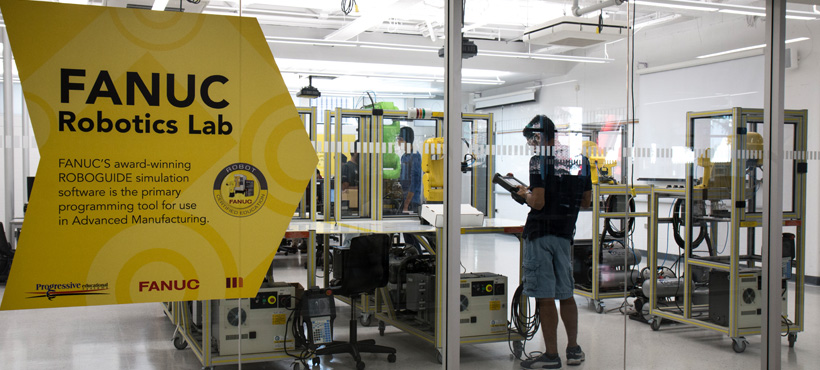
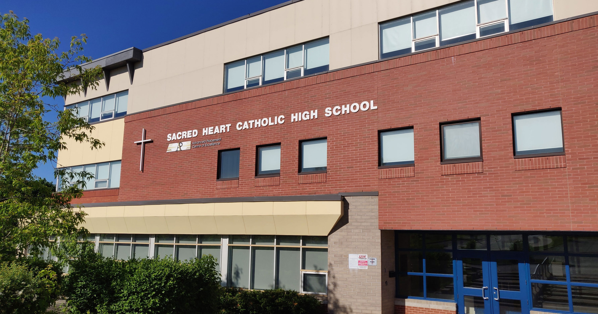

Bachelor of Technology, Automation Systems Engineering Technology Co-op Program
Hamilton, Ontario - Sep 2022 — Dec 2026

Concurrent Chemical Engineering Technology Advanced Diploma and ACBSP Accredited Certificate of Business
FANUC Certified Robot Operator - Level 1
Specialties: PLCs, Industrial Robotics, Systems Design, Chemical Engineering Technology, IoT Networks
BTech Smart Systems Stream - Labs

Worked from a systems integrator perspective to troubleshoot automated lab equipment, performing failure analysis and preventative maintenance to support equipment uptime
Calibrated RTDs, thermocouples, and transmitters with DeviceCare SFE100, pressure gauges with deadweight testers
Conducted motor control tests with RSLogix ladder logic and wired and configured the Allen-Bradley PLC I/O modules
Created chemical plant process flow diagrams with UniSim Design, implementing reactors, exchangers, and separators
Tested and tuned PID control on VFD-driven motors to ensure stable and reliable speed control for industrial equipment
Programmed advanced routines for FANUC robots with the teach pendant and RoboGuide
Implemented industrial IoT lab projects using Arduino, LabVIEW, and cloud dashboards for sensor monitoring
Designed logic circuits on FPGAs using Quartus II to practice building components of digital electronics
Assembled and tested embedded systems with e2 Studio, performing signal interfacing and real-time control
Produced technical documentation and reports using Microsoft Word and created lab data graphs using Excel
Sacred Heart CHS
Ontario Secondary School Diploma
Newmarket, Ontario - Sep 2018 — Jun 2022

Graduated with Honours
AP Student
Relevant Courses: AP Physics, AP Calculus, AP Chemistry, AP English, Computer Science